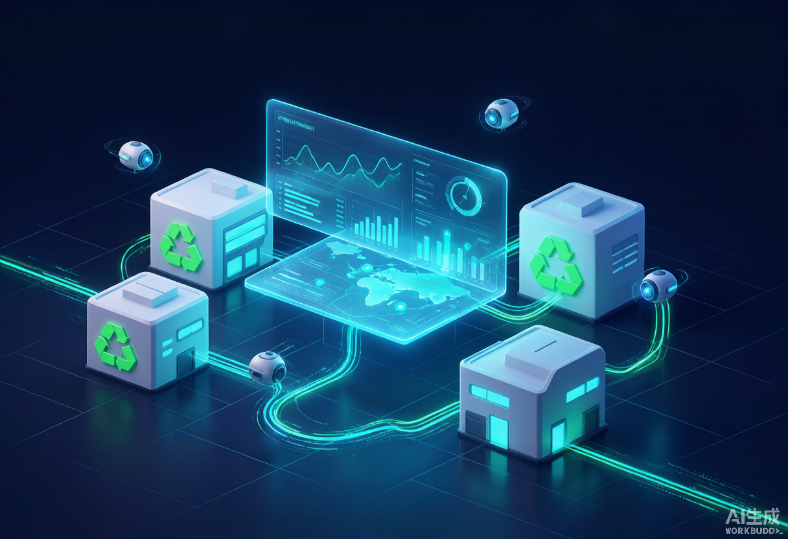
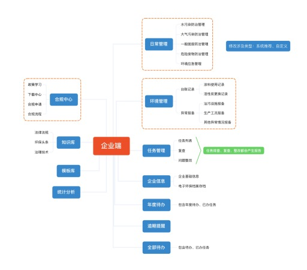

ToB + ToG · 智慧环保平台 · UI/UX
宜兴市企业环境管理
标准化系统企业自主环保体检 + 政府精准监管 双端协同
由无锡市宜兴生态环境局打造的企业环境管理数字化平台，分企业端（ToB）与政府监管端（ToG）双向协同。以「事前预防、企业自主体检、标准化合规、差异化监管」为核心，把国家及江苏省环保执法与正面清单政策转化为可落地的系统化能力——从「事后处罚」转向「事前帮扶、精准监管」。
5 大项 34 小项

— 市场痛点 —
PAIN POINTS
企业与监管部门两方，在传统环保管理模式下各自面临的难题。
企业侧痛点
不熟悉环保高频违法风险点，缺少标准化自查清单，往往被查才被动整改。
“等检查发现问题，已经产生处罚”环评、排污许可、应急预案等纸质材料易丢失、分类混乱，证件到期靠人工记忆。
“换证修编总遗漏”环保岗位多人协同，缺少任务分发与责任划分系统，工作无法留痕。
“谁该做、做到哪了不清楚”正面清单（白名单）激励政策丰厚，但企业不清楚达标条件与申报流程。
“不知道怎么才能进白名单”政府监管侧痛点
传统执法多为现场检查、事后处罚，事前预防手段不足，隐患无法提前化解。
“问题发现总在出事之后”辖区涉污企业数量众多，全面现场检查成本高，难以常态化精细化监管。
“跑不过来”企业环保台账、资料分散各处，调取效率低，治理设施运维难核验。
“数据找不全”正面清单要求「守法少扰、违法严管」，缺数字化工具支撑合规判定。
“干好干坏分不清”排污许可到期、预案超期等风险靠人工梳理，易遗漏高风险企业。
“靠Excel人肉盯”— 核心功能 · 企业端 ToB —
CORE FEATURES · 企业端
赋能企业开展环保自查自纠、档案电子化与自主评估，做企业环境合规数字管家。
日常管理·自查自纠
内置 5 大项 34 小项标准化排查清单，覆盖水、气、固废、危废、环境应急；按日/周期生成自查任务，线上填报问题、上传照片、录入整改计划，可自定义新增检查项。
子账号权限管理
主账号可新增/编辑/删除内部子账号，分配不同岗位环保人员，分级完成环保任务；首次登录强制改密保障账号安全。
环保资料电子化档案
环评、排污许可、应急预案、验收等手续资料分类归档、支持导出；证件到期前半年自动提醒，告别纸质丢失与换证遗漏。
自主评估 & 白名单申请
完成基础条件、日常打卡与全维度自主评估，线上发起整改闭环，提交正面清单认证申请，等待政府审核享受政策激励。
消息预警通知
关注公众号接收小程序推送，任务工单、整改通知、证件到期预警触达不遗漏，环保工作可留痕可追溯。
— 核心功能 · 政府监管端 ToG —
CORE FEATURES · 监管端
为生态环境监管部门提供企业全量档案、台账监控、任务派发与风险预警的数字化工作台。
企业全量信息管理
企业列表全字段检索、自定义标签；查看全生命周期档案（基础信息、资质、历史处罚、信访记录）；数据看板下钻企业明细。
企业台账记录监控
在线查阅企业运维台账（涂料使用、活性炭更换等），支持查看与导出，掌握污染治理设施实际运维情况。
任务派发管理
创建专项/隐患排查任务，批量下发企业，跟踪任务状态与问题上报，实现线上闭环监管。
通知公告与文书送达
按区域、行业、污染类型筛选企业下发通知、整改要求与执法文书；已读未读与回执管理，逾期自动提醒。
风险提醒中心
集中展示排污许可到期、预案逾期、执行报告未申报等风险企业，一键下发整改任务，风险前置早发现早处置。
白名单申请中心
白名单数据看板，统计申请量、通过/驳回与企业环保积分排名，支撑差异化监管落地与审核。
自查、整改、台账、申请材料
查看上报、下发任务与要求
企业接收通知完成整改
企业回传，闭环验证
合规企业享受政策红利
— 产品定位与竞争优势 —
WHY IT WORKS
六大竞争优势
完全对标国家、江苏省、无锡市环保执法与正面清单政策，把自查项、评估项、白名单审核流程线上化，打通「自查-评估-整改-认证-激励」全流程。
既赋能企业做内部环保管理，又给监管提供完整工作台；企业数据直连政府端，任务直达企业端，形成业务闭环而非单向采集。
以企业自主「环保体检」为核心，把高频违法点变成日常自查任务，推动隐患提前整改，从「事后执法」转向「事前帮扶」。
企业端基于小程序无需部署复杂软件，内置标准化清单即开即用，档案到期自动提醒、公众号推送，降低中小企业门槛。
承载白名单线上申报、审核与积分排名，合规企业享受无事不扰、非现场监管、评优优先，真正做到「干好干坏不一样」。
集中管理环保档案与设施运维台账，对证件到期、风险隐患集中预警，精准定位风险企业，减少无效现场检查。
— 服务角色 —
WHO IT SERVES
辖区生产排污企业的环保负责人与内部环保岗位人员，开展自查自纠与合规管理。
宜兴生态环境局的执法与监管人员，查看企业全量档案、下发任务、研判风险。
地方生态环境主管部门，依托系统数据客观判定企业合规水平，落实差异化监管与正面清单。
— 设计过程 —
DESIGN PROCESS

— 高保真界面 —
HI-FI SCREENS
企业端 PC、政府监管端 PC 与小程序核心页面高保真设计稿，点击可放大查看。